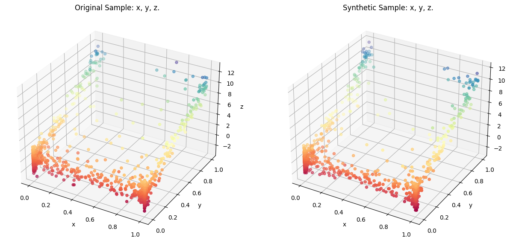

KNN Resampler
This notebook shows how KNN Resampler is used to create synthetic data. There are three methods available in synloc package. This notebook demonstrates two methods: LocalCov and LocalGaussianCopula. The first one draw synthetic values from multivariate normal distribution and the second one draws from the gaussian copula.
[ ]:
from synloc import LocalCov, sample_trivariate_xyz
Data
[2]:
df = sample_trivariate_xyz(1000)
df.head()
[2]:
| x | y | z | |
|---|---|---|---|
| 0 | 0.001029 | 1.443241e-02 | 1.030596 |
| 1 | 0.000010 | 7.651150e-08 | -0.402560 |
| 2 | 0.002199 | 8.689394e-01 | 9.819810 |
| 3 | 0.999379 | 1.780679e-01 | 1.473825 |
| 4 | 0.064769 | 9.160882e-01 | 9.113435 |
Using Multivariate Normal Distribution
We use LocalCov method to create synthetic data. The method uses k-nearest neighbors to create subsamples from nearest neighbors. Then, it estimates the covariance matrix of each subsample and draw synthetic values from the multivariate normal distribution.
[3]:
syn = LocalCov(df, K = 20) # K is the subsample size.
df_syn = syn.fit()
100%|██████████| 1000/1000 [00:01<00:00, 684.34it/s]
After the synthesis complete, you can use the class method comparePlots to visualize the synthetic data and the original data.
[4]:
syn.comparePlots(['x', 'y', 'z'])
